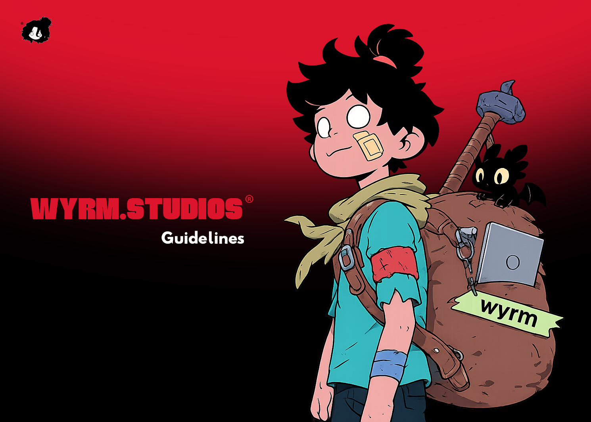

Personal brand and creative studio identity system

WYRM.STUDIOS is my personal creative studio brand, representing my approach to cinematic brand films, motion design, and visual identity.
The brand identity was created to reflect innovation, creativity, and technical excellence. Every element was designed to position WYRM as a premium creative partner for ambitious brands.
From the bold wordmark to the complete visual system, WYRM embodies the fusion of strategic thinking and artistic execution.